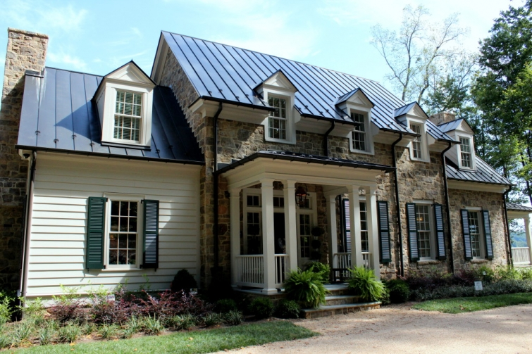
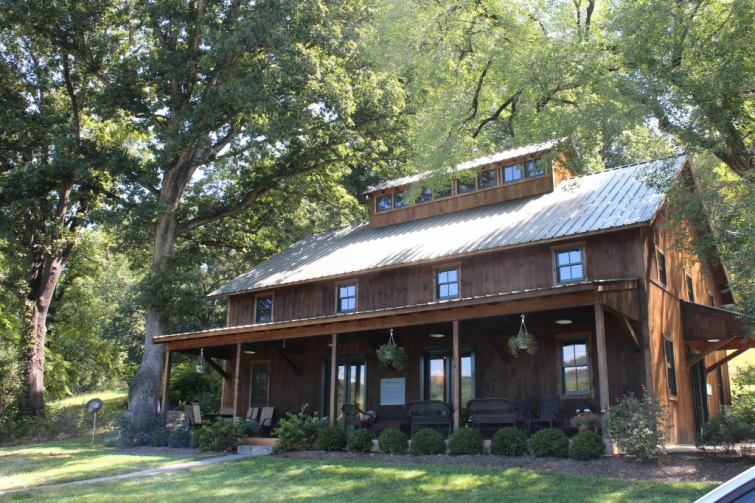
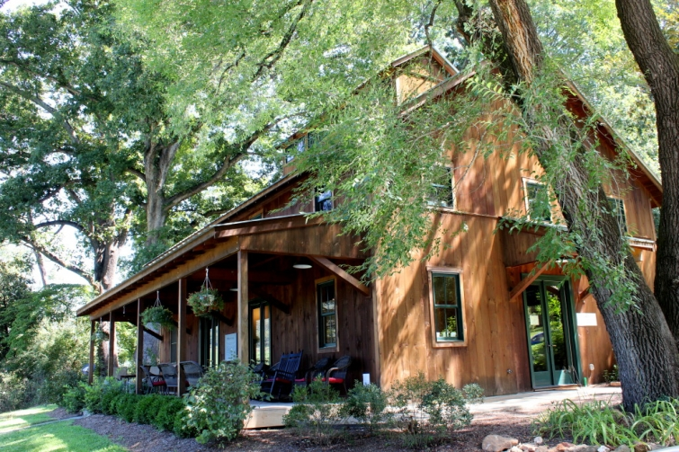

.png)
.PNG)
.PNG)
.PNG)
.PNG)
.PNG)
.JPG)
.JPG)
.PNG)
.PNG)


I bet many of you knew the house above in the teaser photo from the previous post; didn’t you? 🙂 Yes, it is this year’s Southern Living Idea House located a few miles outside of Charlottesville, Virginia. When we were planning our road trip, I knew we would have the perfect opportunity to see it, but we had to wait until we were on our way back home to make the best use of our time.
That area of Virginia is just gorgeous with rolling hills and farmland. We followed the signs through the curvy country roads until we arrived here:
This is the Baldwin Center at Bundoran Farm where you park, purchase your tickets, and catch the shuttle up to the Idea House. It is a place for field trips and workshops related to farming, and it was a pretty building in its own right! The Idea House is open for tours up until December 20. (I bet they will be decorating it for Christmas!) Tickets are $15 per person. The hours for Wed. – Sat. are 10 a.m. – 4 p.m. and for Sunday, 12 p.m. to 4 p.m. It is closed on Tuesdays.
We were there early on a Saturday and caught the second shuttle run of the morning (which meant there were no crowds at the house. 🙂 ) The ride up to the house went through some of the beautiful land on the farm’s 2,300 acres.

We even passed other lovely homes on the way up.
And it was up a number of hills until we made the turn at the Idea House.
The exterior was my favorite part of it.
I loved that mix of stone with horizontal siding and the metal roof!
We walked up to the front door with those lush ferns on the steps…
and admired the topiaries on either side of the door.
And then we entered the foyer hallway. The home was designed by Rosney Co. architectural firm, constructed by Summit Custom Homes from Charlottesville, with the interiors designed by Bunny Williams. The antiques throughout the home really gave it a traditional “lived in” feel.
The first room off the hallway to the left was the warm and cozy “tavern room.” It was what I would have called a library. This was my husband’s favorite room with its heart pine beaded board paneling. You will notice Bunny’s extensive use of art throughout the house.
There are two doorways in the tavern. We exited out the other door back into the entry hall,
and made a left into the fabulous kitchen. 🙂 On the right side of the kitchen is the dining area with its wall of cheerful windows.
And just look at all that blue and white china! It’s Bunny Williams’ line for Ballard Designs.On the other side of that large room – opposite the dining area – you will see the kitchen.
Aren’t all those built-ins amazing?!
Here is a better look at the range with the pop-up vent behind it.
(They were working on it while we were there.)
The kitchen was obviously my favorite room in the house with all its many windows (and those sconces by Currey and Company were fantastic!)Now, do you see that doorway in the back corner of the room? Let’s go through it. There are a couple of little rooms back there you need to see.
First is the pantry with its very very dark cabinetry. (Inkwell by Sherwin Williams.)
Quite a contrast to that light filled kitchen!
There was old fashioned artwork in the hall outside the pantry.
A few steps away was the powder room wallpapered in a cute little print – Mikaela by Stark.
Continue on down the hall a bit further, and you will find a very well done mudroom…
with space for a laundry room.
A laundry room with some nice built in storage. 🙂
Okay, now turn around and go back down the hallway until we get to the “Family Hall.” I was interested in seeing what Bunny did with that tall room since our family room has a 20ft. ceiling.
She filled the large expanse of wall space with a very tall mirror and art.
I’m afraid that is all the time we have for our tour today. I hope you have enjoyed seeing part of the 2015 Southern Living Idea House and that you we will be back here for the next post from it – the bedrooms and bathrooms.
See you soon!
Until next time…


.PNG)
Oh Kelly the last area rug made this old nurse think of EKGs!!lol…love the exterior as well. And the blue and white plates. I use three blue and white plates as my back splash behind my cook top.
———————————————————————–
Too funny! Yes, I can see the similarity there. ::) There are so many blue and white things out there. It would be dangerous if I started to collect that…so I am staying away from it here. (I would get sucked into buying everything I see too easily!)
Kelly
Gosh,is it just me or does the artwork leave one a bit flat? The house is fabulous, really and truly, but some of the artwork doesn’t capture me. I don’t mean to be critical, but gosh such a gorgeous house and the artwork makes me a bit gloomy???
——————————————————————–
I am absolutely no judge of what makes something artistic. It really has to be personal in nature I think, so choosing it is hard. The only paintings I seem to ever be drawn to are landscapes of marshes in the low country. Strange, right? So what may appeal to one person, may turn off another person.
Kelly
Beautiful! I can see why you took so many pictures of the kitchen and dining area. Gorgeous!!!
Shelley
Could you give us some insight on how you plan your trips and find such interesting sights along the route?
———————————————————————–
In this case, we knew we had to head to New Haven, so we planned a route with that destination in mind. I then researched Trip Advisor for hotels and inns that were in a place close to where we could get to in a day. I do a ton of research…weeks! The hotel really determines my final destination in a lot of our trips. Whitehall is specifically why we ended up in Camden. And years ago, the Cottages at Cabot Cove are why we ended up in Kennebunkport. Then I use Tripadvisor for restaurants. Then I look at magazine sites for other recommendations. I guess just a lot of reading is how I plan.
Kelly
What a fun tour…. thank you for taking us along. I am waiting “patiently” for the bedrooms and bathrooms. Thanks again.
Kelly,
This was so much fun! I am so glad you shared it with us. I love all of the green plants that freshen up the spaces and the well designed butlers pantry. It would be awesome to see it all decorated for Christmas! Take care.
Dawn
Thanks for taking us on this tour. It is always a treat to see how designers deal with a space. I love the wall of windows in the kitchen and that awesome gas cooktop but I am not sure I would have put the cooktop there. The kitchen has an interesting layout. Maybe I am just so used to a sink sink in front of a window.
I am looking forward to seeing the bedrooms.
DiAnne
Thanks for this tour, Kelly – I also love the exterior best of this part of the tour! Gorgeous, especially the front door entry area – beautiful! The interior is very Bunny Williams/Ballard – love blue and white, nice ideas, but may I just say – I so much love your home better! Much more similar to my taste! Looking forward to the rest of the house – ciao!
Thanks for giving us a tour. The kitchen was my favorite…although that butler’s pantry was really dark. I think I would have kept it white…but then, I’m not a designer. The study looked so cozy with all that wood…I can understand why your hubby liked it! It’s always fun to see designer homes…and to see another person’s interpretation! 😉
I love, love, love the exterior and the kitchen. I am looking forward to seeing the bedrooms. Thanks for sharing this with us.
The Southern Living Idea House is beautiful. Thank you for sharing your trip and pictures with us. Charlottesville, VA is just a little to far for weekend wanderings when you are coming from GA. Love, love this beautiful home!
Love the exterior of the home and the kitchen, like you do Kelly. I really like the use of stone and the roofing. Oh, how I would love having a kitchen with all those windows and storage. Let’s add those black Windsor chairs and that laundry room too to the list! Drool. 🙂
I had not heard of the Southern Living Idea House before. Really interesting post and what a beautiful house! Thanks for sharing this part of your trip with us!
I thought the house from your last post looked like this house! 🙂 I had viewed it on the website, etc. since it was in C’ville. It’s actually just a few miles from where my daughter and son-in-law are building. If we get up there before it closes I’d love to see it. Those Southern Living homes are always so beautiful. I loved the wood paneling and bookshelves in the first room. It would be hard to pull that off without plenty of natural light. I loved the built in right off the kitchen too. And those kitchen windows are spectacular! The architects definitely utilized the view. I’m looking forward to seeing the bedrooms now. 🙂 I caught a glimpse of you in the mirror. 😉
Loving this. Told my husband we could do this next week on the way back through Charlottesville, but you have done such a good job- I feel like I have Ben there! Lol! Can’t wait for the next post.
Very charming house full of character. There were some surprising “old fashioned” elements to it like the pine paneled walls and some of the wallpaper and artwork, but you know what they say . . . everything old is new again. That’s why I’m hanging on to my dining room set in the warehouse and not letting Annie Sloan near it!!!
What a beautiful place! I am in love with that I love all of the artwork so far.
AND I must find out where that wooden Bundoran Farm sign came from. I NEED that! Off too research that.
The entire house is beautiful but I too love the exterior best. In the family room all I can think of is how heavy that mirror must be and how in the world did they hang it? Can’t wait to se part two!
————————————————————————
That is hilarious about the mirror! Now that you mention it, I do wonder how they hung such a large one. 🙂
Kelly
I hope you’re seeing some progress with your internet and phone problems .. Thanks for continuing to post when it must be difficult for you.
What a beautiful house … I could move in! Imagine waking up to those views each day and having breakfast in that kitchen … even doing laundry would be fun:) We visited Virginia as part of our holiday last year but unfortunately couldn’t fit in Charlottesville. Maybe one day … although we were lucky enough to stay in Williamsburg .. Initially due to our youngest who was keen to visit Busch Gardens!! So glad we did though it was a really special place although extremely hot!! Thanks also for including a link as being from England I really hadn’t heard of these houses that you feature. I’m so enjoying reading about them and then researching more! Take care,
Rosemary
Enjoyed touring with you. We had a Southern Roadtrip planned, but had to return home due to family issues. Hoping to get to see the house in person but, in the meantime, will be enjoying your pictures.
Hi Kelly. So lovely to view this house through your eyes, to be able to have a personal tour. How fortunate to have been able to include it on your travels. Each room has something that makes me think it’s my favourite, love the tavern room bookcases, the kitchen is stunning and the dear pantry is a gem. A mud room with laundry facilities would be a dream. Thank you!